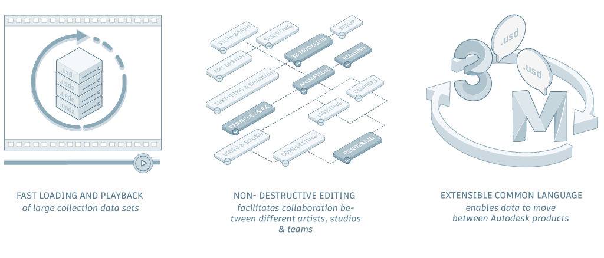

The USD Extension for Maya brings you USD technology while making it feel as seamless in Maya as possible. USD was first developed by Pixar Animation Studios and one of its earliest adopters was Animal Logic. Both studios released open-source plug-ins that leveraged the power of USD in Maya. These plug-ins serve as a baseline for Maya's USD plug-in, which has also been implemented as an open-source project.
USD is essentially an extensible scene description and file format. Maya's open-source USD solution lets users create, edit, work in, work with and collaborate on USD data. USD has been quickly adopted across the industry for the following reasons:

USD is an extensive framework that includes unique concepts and terms that may seem foreign to even experienced Maya users. The goal of the Maya's USD Extension is to make it feel seamless in Maya while staying true to USD terminology. One example of this seamless experience is the Outliner, where USD data and Maya data live along side each other. The Outliner can distinguish between data, allowing workflows and operations to be used with both Maya data and USD data in a mixed data model.
For a better understanding of USD concepts, you can watch USD tutorial videos and content on the Maya Learning Channel. View the USD series for real-time explanations of concepts and theory alongside practical workflow showcases.
API documentation for Maya 2025 - UFE 4.2, Maya 2024 - UFE 4.0, Maya 2023 - UFE 3.2 and Maya 2022 - UFE 2.0 is also available. View the respective API documentation to script and develop with Maya USD. For working with USD and other plug-ins in the Maya ecosystem, visit this support article for version-specific compatibilities.
Related Concepts: Maya's USD documentation covers workflows and windows that are unique to Maya, but it does not include a complete USD glossary or a complete overview of USD concepts. We've adopted USD-specific terminology to keep the experience consistent for advanced users, but these terms may be unfamiliar to beginners. If you're new to USD concepts, please see Pixar's Introduction to USD and Pixar USD Glossary for a great primer.